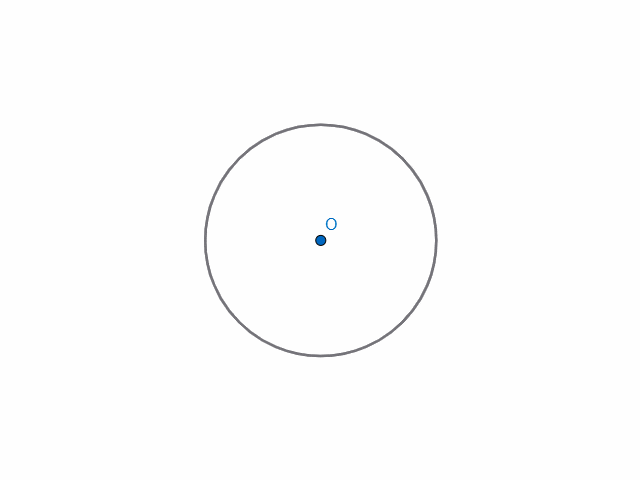
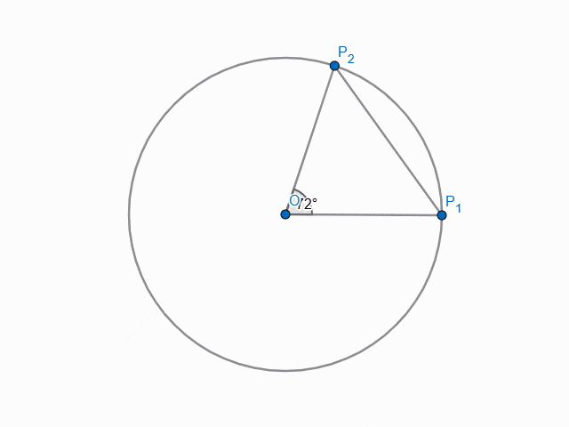
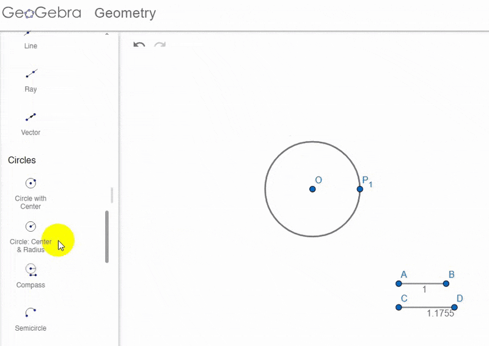
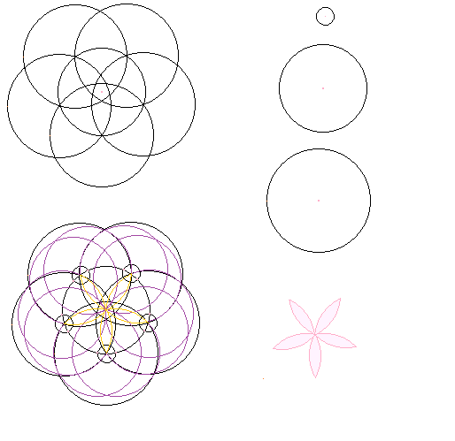

When I was in school, one thing a lot of kids did was use a compass to draw a 6-petal flower. This was the construction:
- Draw a circle $C$ with centre $O$ and arbitrary radius $r$.
- Choose an arbitrary point $P_1$ on the boundary of $C$ as centre, and, with the same radius $r$, draw a circular arc intersecting $C$ at two points. Label one of them $P_2$.
- Repeat step 2, taking the next $P_i$ as centre each time.
- It is found that only 6 distinct $P_i$s are formed, after which they start coinciding with previously drawn $P_i$s. Thus the process terminates.
The circular arcs within $C$ then form the outline of a 6-petal flower.
It's not as complicated as I'm trying to make it sound, of course. An illustration is provided below:

(Click on the image to toggle between animation / completed construction)
This was all well and good, but the burning question on my mind was, why does this produce a 6-petal flower specifically?
What is special about the number 6?
Why didn't this produce a different number of petals, and if you wanted to draw such a flower, what would need to be modified (if indeed it was possible)?
Let's backtrack to the specific decisions made during the construction.
- We used the same radius for all arcs. This means they all subtend the same angle $\theta$ at the centre. Right away we see that if $360^\circ$ is an integer multiple of $\theta$, then it stands to reason that the points we draw would start overlapping.
- We used the same radius for the arcs as we did for the circle $C$ itself. This lets us determine $\theta$: Simply construct $\Delta\,OP_1P_2$, for example, and note that $|OP_1|=|OP_2|=|P_1P_2|=r$ and hence $\Delta\,OP_1P_2$ is equilateral, which yields $\theta = \angle P_1OP_2 = 60^\circ$.
It follows that since $60^\circ\times 6=360^\circ$, we got $6$ of these triangles and hence six petals in the flower, after which we start retracing our steps — $P_7$ coincides with $P_1$, and so on.
Okay, that's one mystery solved.
(When I first did this, I didn't follow quite such a straightforward line of logic — I just stared at the final construction, tried drawing all the radii and chords I could, noticed the $P_i$s formed a regular hexagon that could be decomposed into triangles, and only then recognised that the crux of the matter lay in $|P_1P_2|=r \Rightarrow \theta=360^\circ/6$.)
Next, I wanted to try drawing a 5-petal flower using a similar construction. (I wasn't especially interested in generalising to arbitrarily many petals, I just thought 5-petalled flowers looked pretty.) What do?
One obvious place to start was modifying the equilateral triangle we noted above into a triangle with a central angle of $360^\circ/5=72^\circ$. We would then have $5$ isosceles triangles nestled in $C$, and points $P_1$ through $P_5$ as the tips of the 5 petals.
Right away we notice that non-equilaterality means $|P_1P_2|$ can no longer be $=r$. We're going to have to measure it, which is why the link leading to this page mentions a "ruler" instead of a "straight edge". :(
Thankfully, this was around the middle of 9
th grade, and we had just covered trigonometry in class. I was extremely excited to be able to use this newfound knowledge for a practical purpose
(for a loose-enough definition of 'practical').
Our triangle $\Delta OP_1P_2$ now looks like this:

(Click on the image to toggle between animation / completed construction)
The construction here involves dropping the perpendicular from $O$ onto $\overline{P_1P_2}$, intersecting it at $A$. Since $\Delta OP_1P_2$ is isosceles, we have $\angle OP_1P_2=54^\circ$, and hence $|AP_1|=r\cos(54^\circ)$. The same argument can be repeated for $|AP_2|=|AP_1|$, which yields $|P_1P_2|=2r\cos(54^\circ)$.
Here came another :( moment. I hadn't learnt angle addition formulas for trig yet, so I didn't know how to find $\cos(54^\circ)$ analytically. Looking it up on a calculator, apparently, $2\cos(54^\circ)\approx 1.1755705$.
This was the factor by which I had to stretch my compass after drawing the initial circle, the factor by which the chords were longer than the radius.
Making this one adjustment, and otherwise following the same steps, I ended up with the following shape:

(Click on the image to toggle between animation / completed construction)
Hmm. That sure is a 5-petal flower!
Looks a bit different from what I had in mind, though :/
Since the arc radius is greater than the circle's radius now, the arcs no longer pass through the centre of the circle, leading to wide petals that overlap (note I had to erase lines within the flower as well as outside of it).
I wanted to draw a 5-petal flower where the petals all joined in the centre, at a point. How would I do that?
This should be simple — once we have $P_1$ through $P_5$ evenly dividing the circumference into 5, we just need to draw some sort of circular arc that passes through, say, $O$ and $P_1$, joining them. However, there are infinitely many circles that pass through two given points, so we need to impose some more conditions to figure out how we actually want to do this.
(At this point I realised that the arcs in earlier constructions were actually drawing half of one petal, and then half of another petal roughly across from it. This worked out in the 6-petal case, but for a narrow-petal 5-petal flower, we must draw each half of each petal separately. We can assume the petals are symmetric across the radial axis $\overline{OP_1}$, so each half will be drawn in essentially the same way.)
Another condition I'd like to impose is that, to avoid the petals from being lopsided, they should be also symmetric on an axis perpendicularly bisecting the radius — the petal should be widest in the middle and taper to a point on either end, without it being wider on average toward or away from the centre.
This restricts the centre of the (half) petal's circular arc, say, $Q$, to lie on the perpendicular bisector of the radius $\overline{OP_1}$.
The last condition I chose was simply to take $Q$ to lie on the original circle $C$. There is no special reason for this beyond it being convenient while drawing. If this centre were taken too close to the radius the petals would get wide and might overlap again. So turned out to be an aesthetic choice too.
This nails down the circular arc we need for the (half) petal: its centre ($Q$) is just the intersection of $C$ with the perpendicular bisector of $\overline{OP_1}$, and its radius is simply $r$. I now realise that this is simple enough with a compass and straightedge, and even more simply, it's just going to be a distance of $r$ away from $P_1$.
To see this, let $R$ be the midpoint of $OP_1$, and note that $\Delta ROQ\cong\Delta RP_1Q$ by $RHS$, hence $|P_1Q|=|OQ|=r$.
But back when I was doing this for some stupid reason I was trying to find how far it should be form $P_2$ (I guess I just wanted to use trig for the heck of it).
After drawing this on paper, I made a cleaner version in the most sophisticated graphics program I knew at the time, MS Paint:

The Geogebra construction for this gets a little messy, so I won't include an animation — I encourage you to try it out for yourself on paper, though!
Anyways, the three circles on the right denote the size of the circles/arcs used — one is $r$, another is $1.1755r$, and the smallest is the thing I mentioned in the previous paragraph, which in hindsight is too silly to discuss in detail.
The final result with the scaffolding removed is in the bottom right. Pretty, no?
While writing this, I looked it up, and found that there is, in fact, a
compass-and-straightedge construction for a regular pentagon. That makes this drawing process much neater from a conceptual standpoint, eliminating the need for a calculator entirely. I'm so mad I didn't think of this, or even think of looking this up earlier. But it is what it is.